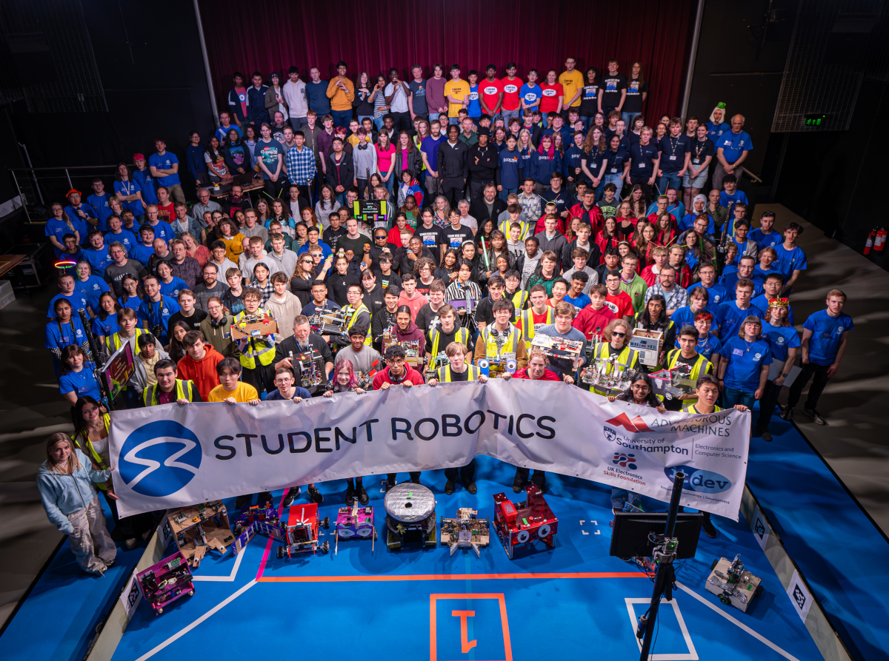

My name is Rehan, I am a student based in the UK. I am currently working on my A-levels studying Further Maths, Maths, Physics and Computer Science.
I am currently interested in the software engineering field as this field is most relevant to my skill set, and I have experience in collaborative programming due to my school experiences and projects.
In terms of my hobbies, I generally take an interest in writing fiction (with a preference for fantasy stories), as well as creating 2D games of nearly any genre, but have most experience with platformers and dungeon crawlers.
This site will develop over time to accomodate for more professional functions, such as hosting any personal portfolios for my work.
Feel free to have a look around.
It was a pleasure competing at Student Robotics this year in the University of Southampton.
The competition was vibrant and the blueshirts (staff) were extremely helpful and supportive to our team throughout the competition. They were instrumental to creating an environment which was equal parts welcoming and competitive.
Enrichment is a mandatory programme at my sixth form, in which you essentially join a club for a year. I am so grateful for choosing robotics as this has taught me so many extremely useful skills.
Not only do these skills include learning how to use certain equipment and power tools such as a drill, bandsaw, jigsaw and lave (among others), but I also learned how to approach a relatively large-scale project like this one. How you should be machining your parts, the need to look at the bigger picture of what you wish to achieve and breaking that down into several minimum viable products, and so many others.
This experience was something which I am extremely grateful for, and these experiences gave me a taste of what it is like to work in a professional environment. My time with robotics will stay with me for the rest of my lifetime.
